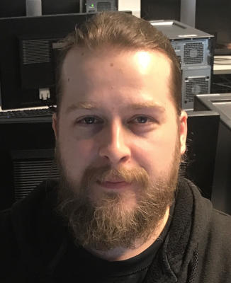

Otsikko

Otsikko
Hei,
olen Tomi Tanhula, 39-vuotias datanomi Joensuusta. Tällä hetkellä opiskelen Haaga-Heliassa tietojenkäsittelyn tradenomiksi.
Nykyisin työskentelen ICT-tukihenkilönä Pohjois-Karjalan koulutuskuntayhtymä Riverialla Joensuussa. Työnkuvaani kuuluu mm. HelpDesk ja lähituki. Työskentelen kahdessa koulutusyksikössä ICT-tukihenkilönä ja toisen koulutusyksikön ICT-tuesta vastaan yksin.
Tietojenkäsittelyala on mielenkiintoinen ja halu oppia uutta sai hakeutumaan tähän koulutukseen.
Tällä hetkellä minua kiinnostavat eniten kyberturvallisuus ja tietoverkot.